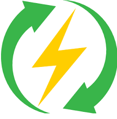

Power efficiency
- Power efficiency is another important measurement in modern computers. A higher power efficiency can often be traded for lower speed or higher cost. The typical measurement when referring to power consumption in computer architecture is MIPS/W (millions of instructions per second per watt).

- Modern circuits have less power required per transistor as the number of transistors per chip grows. This is because each transistor that is put in a new chip requires its own power supply and requires new pathways to be built to power it. However the number of transistors per chip is starting to increase at a slower rate. Therefore, power efficiency is starting to become as important, if not more important than fitting more and more transistors into a single chip. Recent processor designs have shown this emphasis as they put more focus on power efficiency rather than cramming as many transistors into a single chip as possible. In the world of embedded computers, power efficiency has long been an important goal next to throughput and latency.